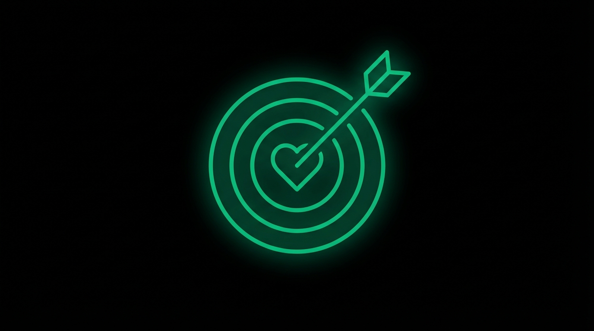

<!DOCTYPE html>
<html lang="en">
<head>
    <meta charset="UTF-8">
    <meta name="viewport" content="width=device-width, initial-scale=1.0">
    <title>Emotional Precision | Quantum Scale</title>
    <script src="https://cdn.tailwindcss.com"></script>
    <script src="https://unpkg.com/react@18/umd/react.production.min.js"></script>
    <script src="https://unpkg.com/react-dom@18/umd/react-dom.production.min.js"></script>
    <script src="https://unpkg.com/@babel/standalone/babel.min.js"></script>
    <script src="https://unpkg.com/framer-motion@10.16.4/dist/framer-motion.js"></script>
    <link rel="preconnect" href="https://fonts.googleapis.com">
    <link rel="preconnect" href="https://fonts.gstatic.com" crossorigin>
    <link href="https://fonts.googleapis.com/css2?family=Inter:wght@300;400;500;600;700&display=swap" rel="stylesheet">
    <style>
        * { font-family: 'Inter', sans-serif; }
        .accent { color: #10b981; }
        .accent-bg { background-color: #10b981; }
        .glow { box-shadow: 0 0 60px rgba(16, 185, 129, 0.3); }
    </style>
</head>
<body class="bg-white text-neutral-900">
    <div id="root"></div>

    <script type="text/babel">
        const { useState, useRef, useEffect } = React;
        const { motion, useInView, AnimatePresence } = window.Motion;

        const smoothEase = [0.22, 1, 0.36, 1];

        // Animation Components
        function FadeUp({ children, delay = 0, className = "" }) {
            const ref = useRef(null);
            const isInView = useInView(ref, { once: true, margin: "-50px" });
            return (
                <motion.div
                    ref={ref}
                    className={className}
                    initial={{ opacity: 0, y: 40 }}
                    animate={isInView ? { opacity: 1, y: 0 } : {}}
                    transition={{ duration: 0.7, delay, ease: smoothEase }}
                >
                    {children}
                </motion.div>
            );
        }

        function ScaleIn({ children, delay = 0, className = "" }) {
            const ref = useRef(null);
            const isInView = useInView(ref, { once: true, margin: "-50px" });
            return (
                <motion.div
                    ref={ref}
                    className={className}
                    initial={{ opacity: 0, scale: 0.9 }}
                    animate={isInView ? { opacity: 1, scale: 1 } : {}}
                    transition={{ duration: 0.6, delay, ease: smoothEase }}
                >
                    {children}
                </motion.div>
            );
        }

        function Counter({ end, suffix = "", duration = 2 }) {
            const ref = useRef(null);
            const isInView = useInView(ref, { once: true });
            const [count, setCount] = useState(0);

            useEffect(() => {
                if (!isInView) return;
                let start = 0;
                const step = end / (duration * 60);
                const timer = setInterval(() => {
                    start += step;
                    if (start >= end) {
                        setCount(end);
                        clearInterval(timer);
                    } else {
                        setCount(Math.floor(start));
                    }
                }, 1000 / 60);
                return () => clearInterval(timer);
            }, [isInView, end, duration]);

            return <span ref={ref}>{count}{suffix}</span>;
        }

        // Icons
        const CheckIcon = () => (
            <svg className="w-5 h-5" fill="none" stroke="currentColor" viewBox="0 0 24 24">
                <path strokeLinecap="round" strokeLinejoin="round" strokeWidth={2} d="M5 13l4 4L19 7" />
            </svg>
        );

        const TargetIcon = () => (
            <svg className="w-6 h-6" fill="none" stroke="currentColor" viewBox="0 0 24 24">
                <path strokeLinecap="round" strokeLinejoin="round" strokeWidth={2} d="M9 12l2 2 4-4m5.618-4.016A11.955 11.955 0 0112 2.944a11.955 11.955 0 01-8.618 3.04A12.02 12.02 0 003 9c0 5.591 3.824 10.29 9 11.622 5.176-1.332 9-6.03 9-11.622 0-1.042-.133-2.052-.382-3.016z" />
            </svg>
        );

        // Emotion Precision Data
        const emotionPairs = [
            { vague: 'Sad', precise: ['Heartbroken', 'Disappointed', 'Dejected', 'Grieving'], color: 'blue' },
            { vague: 'Happy', precise: ['Elated', 'Content', 'Relieved', 'Triumphant'], color: 'amber' },
            { vague: 'Scared', precise: ['Terrified', 'Anxious', 'Vulnerable', 'Paranoid'], color: 'purple' },
            { vague: 'Angry', precise: ['Furious', 'Resentful', 'Frustrated', 'Betrayed'], color: 'red' }
        ];

        // Interactive Emotion Explorer
        const EmotionExplorer = () => {
            const [selected, setSelected] = useState(null);

            return (
                <div className="bg-neutral-900 rounded-2xl p-8 glow">
                    <p className="text-neutral-400 text-center mb-6">Click a vague emotion to expand it</p>

                    <div className="grid grid-cols-2 md:grid-cols-4 gap-4 mb-6">
                        {emotionPairs.map((pair, i) => (
                            <motion.button
                                key={i}
                                onClick={() => setSelected(selected === i ? null : i)}
                                className={`py-4 px-6 rounded-xl font-bold text-lg transition-all ${
                                    selected === i
                                        ? 'bg-emerald-500 text-white'
                                        : 'bg-neutral-800 text-neutral-400 hover:bg-neutral-700'
                                }`}
                                whileHover={{ scale: 1.05 }}
                                whileTap={{ scale: 0.95 }}
                            >
                                {pair.vague}
                            </motion.button>
                        ))}
                    </div>

                    <AnimatePresence mode="wait">
                        {selected !== null && (
                            <motion.div
                                key={selected}
                                initial={{ opacity: 0, height: 0 }}
                                animate={{ opacity: 1, height: 'auto' }}
                                exit={{ opacity: 0, height: 0 }}
                                className="overflow-hidden"
                            >
                                <div className="pt-4 border-t border-neutral-800">
                                    <p className="text-emerald-400 text-sm mb-4 text-center">Precise alternatives:</p>
                                    <div className="flex flex-wrap justify-center gap-3">
                                        {emotionPairs[selected].precise.map((emotion, j) => (
                                            <motion.span
                                                key={j}
                                                initial={{ opacity: 0, scale: 0.8 }}
                                                animate={{ opacity: 1, scale: 1 }}
                                                transition={{ delay: j * 0.1 }}
                                                className="px-4 py-2 bg-emerald-500/20 text-emerald-400 rounded-full font-medium"
                                            >
                                                {emotion}
                                            </motion.span>
                                        ))}
                                    </div>
                                </div>
                            </motion.div>
                        )}
                    </AnimatePresence>
                </div>
            );
        };

        // Before/After Demo
        const TransformDemo = () => {
            const [activeIdx, setActiveIdx] = useState(0);
            const [showAfter, setShowAfter] = useState(false);

            const examples = [
                {
                    before: "Are you unhappy with your situation?",
                    after: "Are you lying awake at 3am, replaying conversations and wondering where it all went wrong?",
                    why: "\"Unhappy\" is abstract. \"3am replaying conversations\" is visceral."
                },
                {
                    before: "Feel more confident.",
                    after: "Walk into any room without that knot in your stomach or the urge to check your phone to avoid eye contact.",
                    why: "\"Confident\" is a goal. The knot and phone-checking are symptoms they recognize."
                },
                {
                    before: "We help businesses grow.",
                    after: "We help founders escape the feast-or-famine cycle that keeps them one bad month from disaster.",
                    why: "\"Grow\" is vague. \"One bad month from disaster\" is the anxiety they live with."
                }
            ];

            const next = () => {
                setShowAfter(false);
                setActiveIdx((activeIdx + 1) % examples.length);
            };

            return (
                <div className="border border-neutral-200 rounded-2xl overflow-hidden">
                    <div className="flex border-b border-neutral-200">
                        {examples.map((_, i) => (
                            <button
                                key={i}
                                onClick={() => { setActiveIdx(i); setShowAfter(false); }}
                                className={`flex-1 py-3 text-sm font-medium ${i === activeIdx ? 'bg-neutral-950 text-white' : 'bg-white text-neutral-500 hover:bg-neutral-50'}`}
                            >
                                Example {i + 1}
                            </button>
                        ))}
                    </div>

                    <div className="p-6 bg-white">
                        <div className="mb-6">
                            <span className="text-xs font-medium text-neutral-500 uppercase tracking-wider">Vague (Before)</span>
                            <p className="mt-2 p-4 bg-neutral-50 rounded-lg text-neutral-600 italic border border-neutral-200">
                                "{examples[activeIdx].before}"
                            </p>
                        </div>

                        {!showAfter ? (
                            <button
                                onClick={() => setShowAfter(true)}
                                className="w-full py-3 bg-neutral-950 text-white rounded-lg font-medium hover:bg-neutral-800 transition-colors"
                            >
                                Reveal Precise Version
                            </button>
                        ) : (
                            <motion.div
                                initial={{ opacity: 0, y: 20 }}
                                animate={{ opacity: 1, y: 0 }}
                            >
                                <div className="mb-4">
                                    <span className="text-xs font-medium text-neutral-900 uppercase tracking-wider">Precise (After)</span>
                                    <p className="mt-2 p-4 bg-white rounded-lg text-neutral-900 font-medium border-2 border-neutral-900">
                                        "{examples[activeIdx].after}"
                                    </p>
                                </div>
                                <div className="p-4 bg-neutral-950 rounded-lg text-neutral-300 text-sm mb-4">
                                    <span className="text-white font-medium">Why it works:</span> {examples[activeIdx].why}
                                </div>
                                <button
                                    onClick={next}
                                    className="text-neutral-500 hover:text-neutral-900 text-sm"
                                >
                                    Next example →
                                </button>
                            </motion.div>
                        )}
                    </div>
                </div>
            );
        };

        // Main Lesson
        const Lesson = () => {
            return (
                <div className="min-h-screen">
                    {/* Hero */}
                    <section className="bg-neutral-950 text-white py-20 relative overflow-hidden">
                        <div className="absolute inset-0 opacity-20">
                            <div className="absolute top-0 left-1/4 w-96 h-96 bg-emerald-500 rounded-full blur-3xl"></div>
                            <div className="absolute bottom-0 right-1/4 w-96 h-96 bg-emerald-600 rounded-full blur-3xl"></div>
                        </div>

                        <div className="max-w-4xl mx-auto px-6 relative z-10">
                            <motion.div
                                initial={{ opacity: 0, y: 30 }}
                                animate={{ opacity: 1, y: 0 }}
                                transition={{ duration: 0.8, ease: smoothEase }}
                            >
                                <span className="inline-block px-4 py-1.5 bg-emerald-500/20 text-emerald-400 rounded-full text-sm font-medium mb-6">
                                    Copywriting Mastery
                                </span>
                                <h1 className="text-4xl md:text-5xl font-bold mb-6 leading-tight">
                                    Emotional Precision
                                </h1>
                                <p className="text-xl text-neutral-300 max-w-2xl leading-relaxed mb-10">
                                    Vague emotions create vague copy that resonates with nobody. Name the exact feeling and watch persuasion become effortless.
                                </p>

                                {/* Stats */}
                                <div className="flex gap-12 flex-wrap">
                                    <div>
                                        <div className="text-4xl font-bold text-emerald-400">
                                            <Counter end={4} />
                                        </div>
                                        <div className="text-neutral-500 text-sm">Precision Keys</div>
                                    </div>
                                    <div>
                                        <div className="text-4xl font-bold text-emerald-400">
                                            <Counter end={10} suffix="x" />
                                        </div>
                                        <div className="text-neutral-500 text-sm">More Resonance</div>
                                    </div>
                                </div>
                            </motion.div>
                        </div>
                    </section>

                    {/* Core Concept */}
                    <section className="py-20 px-6 bg-white">
                        <div className="max-w-4xl mx-auto">
                            <FadeUp>
                                <p className="text-xl text-neutral-700 leading-relaxed mb-6">
                                    Most copywriters know emotions matter. So they write "feel confident" or "overcome fear." These phrases are emotionally bankrupt. They're so vague they could apply to anyone, which means they resonate with no one. Your prospect reads them and feels nothing because nothing specific has been described.
                                </p>
                            </FadeUp>
                            <FadeUp delay={0.1}>
                                <p className="text-xl text-neutral-700 leading-relaxed mb-6">
                                    <strong>Emotional precision</strong> is naming the exact feeling, in the exact context, with the exact language your reader uses internally. When you achieve this, you don't need to convince. You describe their reality and offer a path forward. They see themselves in your words and think "finally, someone who understands."
                                </p>
                            </FadeUp>
                            <FadeUp delay={0.2}>
                                <p className="text-lg text-neutral-600 leading-relaxed mb-6">
                                    This skill separates occasional wins from consistent breakthroughs. It's the difference between copy that informs and copy that transforms. The difference between prospects who consider and buyers who convert.
                                </p>
                            </FadeUp>
                            <FadeUp delay={0.3}>
                                <p className="text-lg text-neutral-600 leading-relaxed">
                                    Think about the last time someone perfectly articulated something you felt but couldn't express. That moment of recognition is what precision creates, and it's the foundation of persuasion that doesn't feel like selling.
                                </p>
                            </FadeUp>
                        </div>
                    </section>

                    {/* Emotion Explorer */}
                    <section className="py-16 px-6 bg-neutral-950">
                        <div className="max-w-4xl mx-auto">
                            <FadeUp className="text-center mb-10">
                                <h2 className="text-3xl font-bold mb-4 text-white">The Precision Gap</h2>
                                <p className="text-neutral-400">Basic emotions are useless. See how precision transforms vague into vivid.</p>
                            </FadeUp>
                            <ScaleIn>
                                <EmotionExplorer />
                            </ScaleIn>
                        </div>
                    </section>

                    {/* Holy Shit Moment */}
                    <section className="py-20 px-6 bg-white">
                        <div className="max-w-4xl mx-auto">
                            <FadeUp>
                                <div className="text-center mb-12">
                                    <span className="text-neutral-500 text-sm font-medium uppercase tracking-wider">The Insight</span>
                                    <h2 className="text-3xl md:text-4xl font-bold mt-4 text-neutral-900">
                                        Why Precision Feels Like Mind-Reading
                                    </h2>
                                </div>
                            </FadeUp>

                            <ScaleIn delay={0.2}>
                                <div className="bg-neutral-950 rounded-2xl p-8 border border-neutral-800">
                                    <p className="text-xl text-neutral-300 leading-relaxed mb-6">
                                        "Stressed" could mean anything. "That 3am panic when you realize you can't make payroll" is someone's exact Tuesday. The specificity creates instant recognition.
                                    </p>
                                    <p className="text-xl text-neutral-300 leading-relaxed mb-6">
                                        "Anxious" is a label. "Checking your phone every 30 seconds for a response that isn't coming" is a scene. Scenes are memorable. Labels are forgettable.
                                    </p>
                                    <p className="text-xl text-neutral-300 leading-relaxed mb-6">
                                        "Frustrated" is vague. "Watching competitors with half your talent pass you by" is visceral. It names the specific injustice they feel but rarely articulate.
                                    </p>
                                    <div className="border-t border-neutral-800 pt-6 mt-6">
                                        <p className="text-2xl font-bold text-white">
                                            When you describe their experience precisely, they think: <span className="text-neutral-400">"This person gets me."</span>
                                        </p>
                                        <p className="text-neutral-400 mt-4">
                                            That moment of recognition is the foundation of trust. And trust is the precursor to every sale.
                                        </p>
                                    </div>
                                </div>
                            </ScaleIn>
                        </div>
                    </section>

                    {/* Four Keys */}
                    <section className="py-20 px-6 bg-white">
                        <div className="max-w-4xl mx-auto">
                            <FadeUp className="mb-12">
                                <h2 className="text-3xl font-bold mb-4">Four Keys to Precision</h2>
                                <p className="text-neutral-600">Each key unlocks a deeper level of connection with your reader.</p>
                            </FadeUp>

                            <div className="space-y-6">
                                {[
                                    { title: 'Name the Sensation', desc: 'Don\'t say "stress." Say "that tight feeling in your chest when another bill arrives." Physical sensations ground abstract emotions in reality. Your reader feels their body respond to your words because you\'ve described what they actually experience.' },
                                    { title: 'Describe the Behavior', desc: 'Fear becomes checking and rechecking. Frustration becomes snapping at loved ones. Anxiety is scrolling through your phone to avoid conversation. Show the action that accompanies the emotion, and readers recognize themselves immediately.' },
                                    { title: 'Quote the Inner Voice', desc: '"Maybe I\'m just not cut out for this" hits harder than "self-doubt." Use their exact self-talk. The voice in their head at 2am. The thing they\'d never say out loud but think constantly. That\'s where connection lives.' },
                                    { title: 'Add Context', desc: '"Frustrated" becomes "frustrated watching competitors with half your talent pass you by." Context transforms generic feelings into specific situations. It\'s the difference between a category and a photograph.' }
                                ].map((item, i) => (
                                    <FadeUp key={i} delay={i * 0.1}>
                                        <div className="flex gap-4 p-6 bg-white rounded-xl border border-neutral-200">
                                            <div className="w-10 h-10 rounded-lg bg-neutral-950 text-white flex items-center justify-center font-bold flex-shrink-0">
                                                {i + 1}
                                            </div>
                                            <div>
                                                <h3 className="font-bold text-lg mb-2">{item.title}</h3>
                                                <p className="text-neutral-600 leading-relaxed">{item.desc}</p>
                                            </div>
                                        </div>
                                    </FadeUp>

              {/* Lesson Illustration */}
              <FadeUp>
                <div className="my-8">
                  
                </div>
              </FadeUp>
                                ))}
                            </div>
                        </div>
                    </section>

                    {/* Transform Demo */}
                    <section className="py-16 px-6 bg-white border-t border-neutral-100">
                        <div className="max-w-4xl mx-auto">
                            <FadeUp className="text-center mb-10">
                                <h2 className="text-3xl font-bold mb-4">See the Difference</h2>
                                <p className="text-neutral-600">Watch vague become vivid</p>
                            </FadeUp>
                            <ScaleIn>
                                <TransformDemo />
                            </ScaleIn>
                        </div>
                    </section>

                    {/* How to Develop */}
                    <section className="py-16 px-6 bg-white">
                        <div className="max-w-4xl mx-auto">
                            <FadeUp className="mb-10">
                                <h2 className="text-2xl font-bold flex items-center gap-3">
                                    <span className="text-neutral-900"><TargetIcon /></span>
                                    How to Develop This Skill
                                </h2>
                                <p className="text-neutral-600 mt-2">Emotional precision isn't talent. It's a skill built through deliberate practice and research.</p>
                            </FadeUp>

                            <div className="grid md:grid-cols-2 gap-6">
                                {[
                                    { title: 'Mine Customer Language', desc: 'Read reviews, support tickets, forums. Your customers already describe emotions precisely. Borrow their words. The best copy is stolen from your audience\'s mouth.' },
                                    { title: 'Deep Interviews', desc: 'Ask "how did that feel?" then "what do you mean?" Keep probing past labels to sensations. The real gold is always two or three questions deep.' },
                                    { title: 'Build a Swipe File', desc: 'Capture precise emotional language from books, conversations, and competitor reviews. Build your precision toolkit over time.' },
                                    { title: 'Practice Expansion', desc: 'Take any vague emotion and write ten specific versions. Do this daily. Repetition builds the skill until precision becomes automatic.' }
                                ].map((item, i) => (
                                    <FadeUp key={i} delay={i * 0.1}>
                                        <div className="p-6 bg-white border border-neutral-200 rounded-xl">
                                            <h3 className="font-bold mb-2">{item.title}</h3>
                                            <p className="text-neutral-600 text-sm leading-relaxed">{item.desc}</p>
                                        </div>
                                    </FadeUp>
                                ))}
                            </div>
                        </div>
                    </section>

                    {/* Key Takeaways */}
                    <section className="py-16 px-6 bg-neutral-950">
                        <div className="max-w-4xl mx-auto">
                            <FadeUp>
                                <div className="rounded-2xl p-8 border border-neutral-800">
                                    <h2 className="text-2xl font-bold mb-6 text-white">Key Takeaways</h2>
                                    <div className="space-y-4">
                                        {[
                                            'Vague emotions like "happy" or "stressed" resonate with no one.',
                                            'Precision means naming exact sensations, behaviors, and internal dialogue.',
                                            'When you describe their experience precisely, persuasion becomes effortless.',
                                            'The four keys: sensation, behavior, inner voice, context.',
                                            'Build precision through research, interviews, and deliberate practice.',
                                            'Match actual emotional intensity. Overshooting breaks credibility.'
                                        ].map((item, i) => (
                                            <motion.div
                                                key={i}
                                                className="flex items-start gap-3"
                                                initial={{ opacity: 0, x: -20 }}
                                                whileInView={{ opacity: 1, x: 0 }}
                                                viewport={{ once: true }}
                                                transition={{ delay: i * 0.05 }}
                                            >
                                                <span className="flex-shrink-0 w-6 h-6 rounded-full bg-white text-neutral-950 flex items-center justify-center">
                                                    <CheckIcon />
                                                </span>
                                                <p className="text-neutral-300">{item}</p>
                                            </motion.div>
                                        ))}
                                    </div>
                                </div>
                            </FadeUp>
                        </div>
                    </section>

                    {/* Footer */}
                    <footer className="bg-neutral-950 text-white py-12 px-6">
                        <div className="max-w-4xl mx-auto text-center">
                            <p className="text-neutral-500 text-sm">
                                Copywriting Mastery Series | Quantum Scale
                            </p>
                        </div>
                    </footer>
                </div>
            );
        };

        ReactDOM.render(<Lesson />, document.getElementById('root'));
    </script>
</body>
</html>
